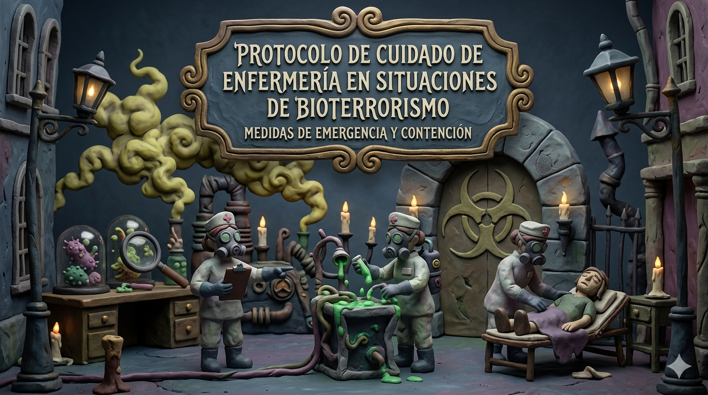
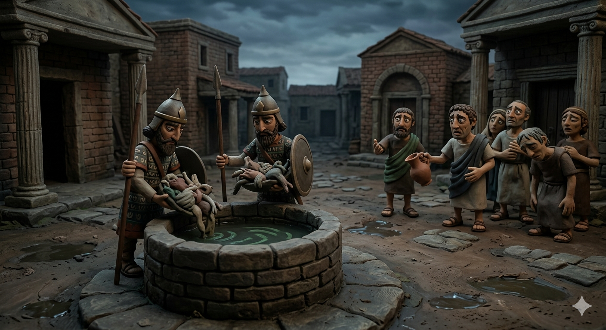
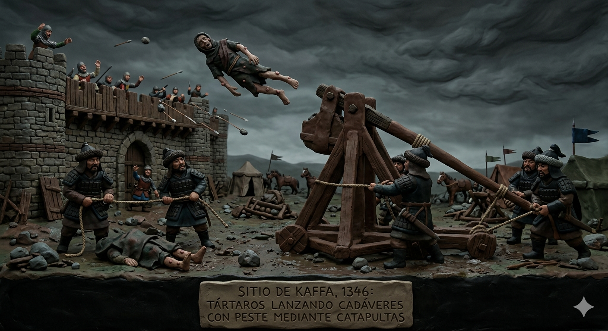
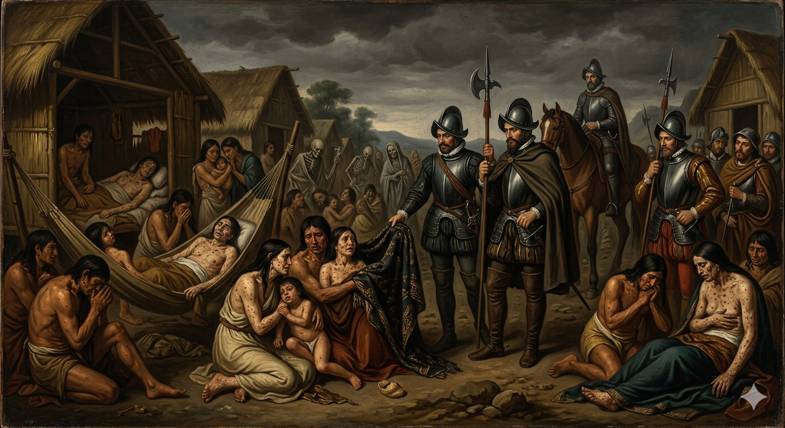
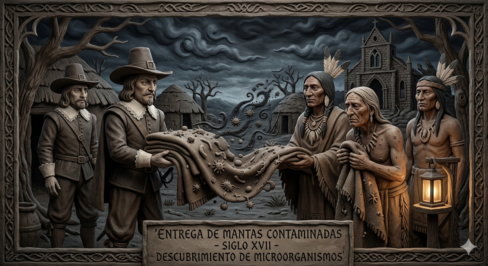
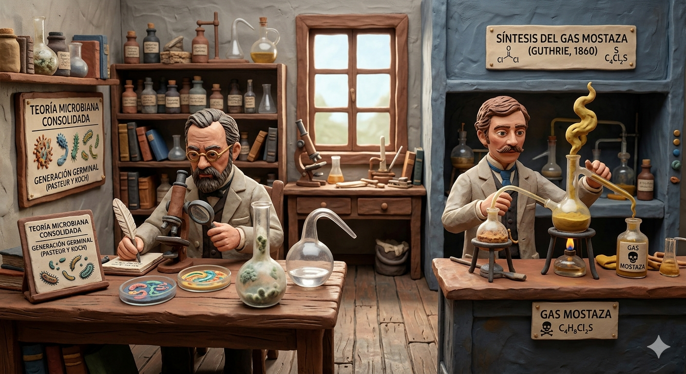
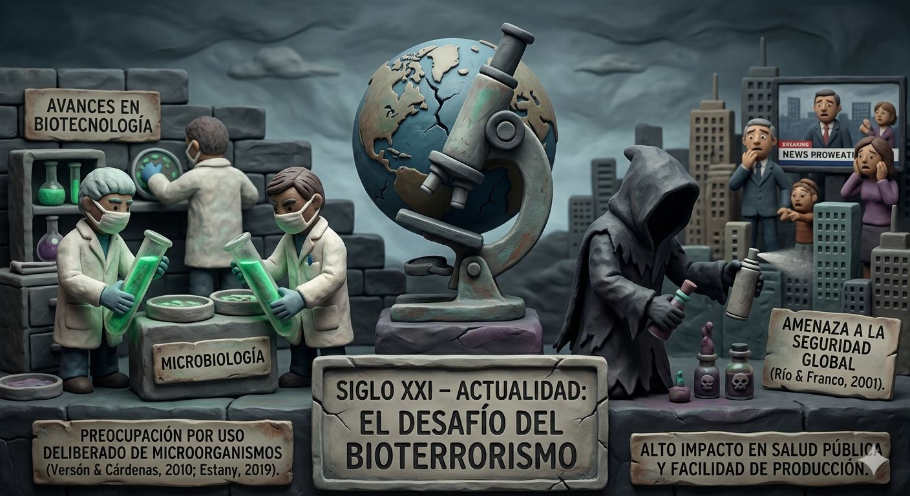

Imagen generada con IA. Gemini 2026
Comprensión histórica, definición operativa y alcance del bioterrorismo como amenaza a la salud pública global.
El bioterrorismo es el uso intencional de agentes biológicos (bacterias, virus, toxinas) como armas para provocar enfermedades masivas, muerte y pánico en la población civil, con fines políticos, ideológicos o de terror. Se distingue de las epidemias naturales por su carácter deliberado y premeditado.






El Centro de Control de Enfermedades (CDC) clasifica los agentes biológicos en tres categorías:
Mayor amenaza. Fácil diseminación o transmisión persona a persona. Alta mortalidad. Generan pánico masivo.
Moderadamente fáciles de diseminar. Morbilidad moderada y menor mortalidad. Requieren vigilancia específica.
Patógenos emergentes que podrían modificarse para diseminación masiva. Disponibilidad y potencial de alto impacto.
Buscar: patrón epidémico inusual (múltiples casos simultáneos sin nexo epidemiológico claro), presentación clínica atípica para la zona, agente inusual en región no endémica, falta de respuesta a tratamiento convencional, casos de enfermedad rara o erradicada.
| Agente | Vía Principal | Síntomas Clave | Categoría CDC |
|---|---|---|---|
| Ántrax Inhalatorio | Aerosol / esporas inhaladas | Fiebre súbita, disnea progresiva, mediastinitis. Sin tratamiento: mortalidad >80% | A |
| Viruela | Aerosol, contacto directo | Fiebre alta, erupción vesiculopustular generalizada, lesiones en palmas y plantas | A |
| Botulismo | Ingestión / aerosol de toxina | Parálisis descendente, diplopia, disfagia, ptosis. SIN fiebre, SIN alteración de conciencia | A |
| Plaga Neumónica | Aerosol de Yersinia pestis | Fiebre alta, tos hemoptoica, sepsis fulminante. Muy alta mortalidad sin tratamiento | A |
| Fiebre Hemorrágica | Contacto directo con fluidos | Fiebre, hemorragias mucosas, fallo multiorgánico. Ébola, Marburg, Lassa | A |
| Ricina | Ingestión / inyección | Dolor abdominal, diarrea hemorrágica, fallo multiorgánico. No hay antídoto | B |
Marco legal internacional, nacional y de enfermería que regula la respuesta ante eventos de bioterrorismo.
| Instrumento / Organismo | Contenido Relevante |
|---|---|
| Convención sobre Armas Biológicas y Toxínicas (CABT, 1972) | Prohíbe el desarrollo, producción y almacenamiento de armas biológicas. Ratificada por más de 180 países. |
| Protocolo de Ginebra (1925) | Primer acuerdo internacional que prohíbe el uso de armas bacteriológicas en conflictos armados. |
| Reglamento Sanitario Internacional (OMS, RSI 2005) | Marco jurídico para detección, evaluación, notificación y respuesta ante eventos biológicos de importancia internacional. Orienta la comunicación de riesgo transparente y responsable. |
| Resolución 1540 ONU (2004) | Obliga a los estados a adoptar medidas contra la proliferación de armas biológicas, químicas o nucleares. |
| Marco de Sendai (2015–2030) | Incluye desastres de origen biológico y orienta la Reducción del Riesgo de Desastres (RRD) con enfoque preventivo. |
| Instrumento | Contenido Relevante |
|---|---|
| Ley 1523 de 2012 | Establece el Sistema Nacional de Gestión del Riesgo de Desastres (SNGRD). Crea la UNGRD. Incluye riesgos de origen biológico. |
| Resolución 3280 de 2018 (Minsalud) | Lineamientos técnicos y operativos de la Ruta Integral de Atención en Salud. Base para protocolos de respuesta en emergencias biológicas. |
| Decreto 4107 de 2011 | Estructura del Minsalud. Asigna responsabilidades de vigilancia epidemiológica ante emergencias de salud pública. |
| Ley 266 de 1996 — Ejercicio de la Enfermería | Regula la profesión en Colombia. Define rol, funciones y alcance de práctica en situaciones de emergencia y desastre. |
| Plan Decenal de Salud Pública 2022–2031 | Incluye preparación y respuesta ante emergencias sanitarias, pandemias y riesgos biológicos como componente estratégico. |
| SIVIGILA | Sistema de notificación obligatoria de eventos de interés en salud pública, incluidos brotes inusuales por posible bioterrorismo. |
Fundamentos teóricos disciplinares que confieren identidad y autonomía a la enfermería.
Para la enfermera de Nivel I, el cuidado no comienza con la herida del paciente, sino con la seguridad del lugar donde este reside. Al identificar y gestionar determinantes físicos (asegurar instalaciones, despejar rutas de evacuación, implementar barreras sanitarias), la enfermera realiza un acto de cuidado preventivo.
Un entorno deficiente es, en sí mismo, una fuente de enfermedad. En desastres biológicos, un entorno no controlado se convierte en el principal vector de diseminación del agente biológico. "Cuido el entorno para proteger al cuerpo."
| Proceso Caritas | Aplicación en Bioterrorismo |
|---|---|
| Caritas 1 — Práctica del amor y la bondad | La preparación no es un acto burocrático; es el primer acto de amor hacia las víctimas potenciales. La enfermera que se capacita cuida antes de que exista el paciente. |
| Caritas 2 — Fe, esperanza y sensibilidad | En el momento del caos, sostiene la fe de quien ya no puede sostenerla. Transmite calma en los primeros 60 segundos de evaluación. Presencia Auténtica. |
| Caritas 4 — Relación de cuidado de confianza | El Triage no es solo un código de color: es el primer contacto terapéutico. La mirada, la voz y el tacto de la enfermera son intervenciones clínicas. |
| Caritas 5 — Aceptación de sentimientos | Valida el terror del paciente sin amplificarlo. Los Primeros Auxilios Psicológicos (PAP) son la expresión más alta de la Presencia Auténtica en la crisis. |
| Caritas 7 — Aprendizaje transpersonal | La educación comunitaria y los simulacros son relaciones de cuidado transpersonal. Transferencia de conocimiento como acto terapéutico en el tiempo preventivo. |
| Caritas 8 — Entorno de curación físico y espiritual | La recuperación no es solo la ausencia de enfermedad; es la restauración de un entorno donde la persona pueda rehacer su mundo de sentido. |
| Caritas 10 — Apertura a lo existencial | El bioterrorismo genera crisis de sentido. La enfermera sostiene las preguntas existenciales: ¿Por qué a mí? ¿Qué queda después? Son preguntas clínicas que merecen presencia, no respuestas. |
| Componente Neuman | Aplicación en Bioterrorismo |
|---|---|
| El cliente como sistema | Tres niveles: (a) Individuo y animales, (b) Sistemas de salud, (c) Sociedad. Todos son clientes del cuidado de enfermería. |
| El agente como estresor | Estresor extrínseco con naturaleza biológica, intencionalidad deliberada e impacto multidimensional (físico, psíquico y sociopolítico). |
| Línea Normal de Defensa | Estado de salud estable de la población. El bioterrorismo busca quebrar esta línea para provocar un impacto mayor al de una epidemia natural. |
| Línea Flexible de Defensa | Mecanismos de protección ante lo inesperado; su vulnerabilidad aumenta cuando los sistemas de salud pública carecen de capacidad de respuesta oportuna. |
| Prevención Primaria | Fortalecimiento de la vigilancia epidemiológica y preparación del sistema de salud ANTES del evento. |
| Prevención Secundaria | Diagnóstico y tratamiento rápido una vez liberado el agente, para mitigar enfermedad y mortalidad. |
| Prevención Terciaria | Rehabilitación, recuperación psicosocial y restauración del equilibrio del sistema tras el evento. |
El bioterrorismo se inscribe en el ciclo clásico de gestión de Desastres, Emergencias y Urgencias.
← Haz clic en una fase del círculo para ver el protocolo completo
La enfermera de Nivel I es la enfermera generalista que posee las competencias básicas para responder a un desastre. En bioterrorismo, asume el rol de Centinela y Primer Respondiente con visión científica.
Enfermera generalista capaz de: (1) liderar la clasificación inicial mediante Triage START con EPP adecuado; (2) realizar análisis de vulnerabilidad del entorno; (3) garantizar la primera atención e inicio de vigilancia epidemiológica; (4) brindar Primeros Auxilios Psicológicos; y (5) activar la cadena de notificación ante eventos sospechosos.
El Triage START (Simple Triage And Rapid Treatment) es la brújula en el caos. En eventos de bioterrorismo, la evaluación sigue la misma secuencia lógica en menos de 60 segundos, incorporando elementos específicos de bioseguridad.
La escena es segura antes que la víctima. En eventos biológicos, la prisa sin protección convierte al respondiente en una víctima adicional. La enfermera de Nivel I que llega sin protección adecuada no salva: expone y colapsa el sistema.
Prioridad 1
Prioridad 2
Prioridad 3
Fallecido / No recuperable
Criterio: Críticos recuperables con compromiso vital y ventana terapéutica abierta.
El triage en esta categoría requiere juicio clínico riguroso bajo el principio del mayor bien para el mayor número. Documentar siempre los criterios utilizados.
Criterio: Graves estables. La vida no corre peligro inmediato. Pueden esperar atención diferida.
Criterio: "Caminantes." Lesiones leves que pueden esperar o colaborar en la respuesta.
Criterio: Sin respiración tras apertura de vía aérea. Sin posibilidad de recuperación con recursos disponibles.
La clasificación Negro no es abandono: es un acto de amor supremo hacia la colectividad. Sostener la dignidad de cada persona clasificada es una responsabilidad deontológica. El principio utilitarista orienta la decisión; la humanidad no la abandona jamás.
Cuatro escenarios relevantes para el contexto colombiano con protocolo específico de enfermería en cada etapa del ciclo DEU.
47 personas que asistieron a un evento masivo en Armenia presentan simultáneamente: fiebre alta de aparición súbita, dificultad respiratoria progresiva y lesiones cutáneas atípicas (pústulas con zona hemorrágica central). El patrón no corresponde a ninguna enfermedad endémica local. Se sospecha exposición a esporas de Bacillus anthracis por inhalación.
El ántrax inhalatorio tiene mortalidad >80% sin tratamiento precoz. El tiempo de reconocimiento es crítico. La enfermera centinela que detecta el patrón inusual activa toda la cadena de respuesta.
| Etapa DEU | Acciones de Enfermería Nivel I |
|---|---|
| MITIGACIÓN | Conocimiento previo de signos clínicos del ántrax. EPI verificado. Identificación de zonas de aislamiento en urgencias. |
| PREPARACIÓN | Simulacros de respuesta ante exposición a esporas. Conoce los protocolos de notificación al INS y SIVIGILA. |
| RESPUESTA | Triage START con EPP (mínimo nivel 2 biológico). Activación de zona de aislamiento. Notificación urgente. Apoyo para inicio de ciprofloxacino profiláctico según protocolo. |
| RECUPERACIÓN | Vigilancia de casos secundarios. Seguimiento de 60 días post-exposición. Debriefing del equipo de enfermería. |
Un viajero procedente de una zona endémica llega al Aeropuerto El Edén con fiebre alta, hemorragias mucosas, diarrea profusa y deterioro del estado general. En 48 horas, tres personas de su entorno presentan síntomas similares. El patrón de transmisión rápida genera alerta de posible fiebre viral hemorrágica.
Los agentes de fiebre hemorrágica (Categoría A) tienen alto potencial de diseminación persona a persona. El nivel de EPP requerido es el más alto disponible (traje hermético, doble guante, protección ocular). El pánico del personal de salud puede ser tan paralizante como la enfermedad misma.
| Etapa DEU | Acciones de Enfermería Nivel I |
|---|---|
| MITIGACIÓN | Identificación de protocolos para fiebres hemorrágicas. Conocimiento del nivel de EPP requerido (traje hermético, doble guante, protección ocular). |
| PREPARACIÓN | Entrenamiento en donning/doffing de EPP de alto nivel. Inventario de elementos de protección. Identificación de área de aislamiento de presión negativa. |
| RESPUESTA | Aislamiento inmediato del caso. Trazabilidad de contactos. Coordinación con INS para clasificación del agente. Gestión del pánico del equipo de salud y la comunidad. |
| RECUPERACIÓN | Monitoreo de contactos durante el período de incubación. Evaluación psicosocial del personal. Actualización de protocolos institucionales. |
Varios asistentes a un evento social cerrado presentan síntomas neurológicos progresivos: visión doble, disfagia, ptosis palpebral y parálisis descendente. No hay fiebre. El patrón clínico inusual —múltiples casos simultáneos con compromiso neurológico sin síndrome febril— hace sospechar intoxicación intencional por toxina botulínica.
Patrón distintivo: parálisis DESCENDENTE + SIN fiebre + SIN alteración de conciencia. Las toxinas NO se transmiten persona a persona, lo que facilita el manejo del caso. Sin embargo, el deterioro respiratorio progresivo puede ser rápidamente fatal.
| Etapa DEU | Acciones de Enfermería Nivel I |
|---|---|
| MITIGACIÓN | Conocimiento de los signos clínicos de botulismo (parálisis descendente, sin fiebre, sin alteración de conciencia). |
| PREPARACIÓN | Protocolo de manejo de toxinas en urgencias. Disponibilidad de antitoxina botulínica en farmacia hospitalaria. |
| RESPUESTA | Triage con énfasis en función respiratoria. Soporte ventilatorio precoz. Notificación urgente al INS. Identificación y aseguramiento del alimento/fuente. Registro de todos los expuestos. |
| RECUPERACIÓN | Seguimiento de función neurológica. Investigación de fuente de contaminación con autoridades sanitarias y judiciales. |
Se difunde en redes sociales que el agua potable de Armenia fue contaminada con un agente biológico mortal. Cientos de personas acuden simultáneamente a urgencias con síntomas somáticos inespecíficos (náuseas, mareo, dificultad respiratoria psicógena). Los servicios colapsan. No hay contaminación real, pero el pánico genera una emergencia sanitaria de facto.
El bioterrorismo no siempre requiere un agente real. El terror en sí mismo es el arma. La enfermera debe manejar simultáneamente la evaluación clínica para descartar exposición real y la gestión del pánico colectivo.
| Etapa DEU | Acciones de Enfermería Nivel I |
|---|---|
| MITIGACIÓN | Conocimiento de protocolos de comunicación de riesgo. Formación en manejo de pánico colectivo y primeros auxilios psicológicos masivos. |
| PREPARACIÓN | Coordinación previa con comunicaciones institucionales y medios oficiales. Protocolo de atención para síntomas psicosomáticos en emergencias. |
| RESPUESTA | Triage diferenciado: descartar exposición real vs. síntomas psicógenos. PAP grupales. Área de atención psicosocial separada del área médica. Comunicación tranquilizadora y verificada con fuentes oficiales. |
| RECUPERACIÓN | Evaluación psicológica de afectados. Comunicación pública transparente sobre los resultados de las investigaciones. Fortalecimiento de canales de comunicación institucional. |
La respuesta efectiva ante bioterrorismo requiere la articulación coordinada de múltiples instituciones. La enfermera de Nivel I debe conocer el mapa institucional para activar la cadena correcta desde el primer momento.
La atención humanitaria trasciende el acto médico-clínico: es la expresión más alta del reconocimiento de la dignidad humana en medio del caos.
Humanidad · Imparcialidad (sin discriminación) · Neutralidad · Independencia · Voluntariedad · Unidad · Universalidad
| Dimensión Humanitaria | Acción de Enfermería |
|---|---|
| Acceso equitativo | Garantizar que las medidas de triage y contención no discriminen a personas por condición socioeconómica, etnia, género o condición migratoria. La bioseguridad no puede ser pretexto para excluir. |
| Protección de vulnerables | Atención prioritaria a: adultos mayores, niños, personas con discapacidad, embarazadas, personas en situación de calle y migrantes, que tienen mayor vulnerabilidad inmunológica y menor acceso a información. |
| Confidencialidad y dignidad | Proteger la identidad de los pacientes diagnosticados. Asegurar espacios de atención que preserven la intimidad, incluso en contextos de emergencia. |
| Comunicación humanitaria | Informar a las víctimas sobre su diagnóstico, condición y derechos de manera clara, veraz y empática. Nunca usar terminología que criminalice a los afectados. |
| Gestión de fallecidos | Asegurar el manejo digno de los fallecidos por agente biológico: notificar a las familias, acompañar el duelo en crisis, coordinar el protocolo de custodia de cadáveres con EPP adecuado. |
La atención prehospitalaria es el eslabón más crítico en la cadena de supervivencia. Es el primer contacto del sistema de salud con las víctimas.
La escena es segura antes de la víctima. EPP PRIMERO, SIEMPRE. La enfermera de Nivel I que llega sin protección adecuada no salva: expone y colapsa el sistema.
| Principio | Aplicación en Bioterrorismo |
|---|---|
| 1. Seguridad de la escena | Evaluar el tipo de agente biológico sospechoso. Establecer zonas de exclusión, reducción y apoyo. No ingresar sin EPP apropiado. |
| 2. Activación del sistema | Comunicar inmediatamente al SAMU, Bomberos HAZMAT, Secretaría de Salud y UNGRD. Describir: lugar, número de víctimas, síntomas observados, agente sospechoso. |
| 3. Triage en campo | Aplicar Triage START en zona de reducción con EPP. Clasificar y etiquetar antes del traslado. No trasladar sin clasificación previa. |
| 4. Descontaminación en campo | Antes del traslado al hospital, realizar descontaminación primaria en la zona de reducción. Evitar que el agente biológico entre al hospital con el paciente. |
| 5. Cadena de custodia | Documentar todos los casos, síntomas, procedimientos realizados y destino del traslado. Registro imprescindible para la trazabilidad epidemiológica. |
| 6. Comunicación hospital receptor | Notificar al servicio de urgencias el número, clasificación y condición de los pacientes antes de la llegada. Activar el protocolo de aislamiento en el hospital receptor. |
En un evento de bioterrorismo de mediana o gran escala, la gestión de agua potable, suministros humanitarios y donaciones es una función crítica de enfermería.
El agua potable puede ser un vector de diseminación intencional (toxina botulínica, Salmonella, Vibrio cholerae). Si se sospecha contaminación: NO beba · NO use · NOTIFIQUE de inmediato a la Secretaría de Salud y al SNGRD.
En bioterrorismo, la decisión de evacuar es una acción médica crítica: el riesgo de diseminar el agente durante el desplazamiento convierte la evacuación en un dilema clínico.
En desastres convencionales (incendio, sismo), evacuar rápido salva vidas. En bioterrorismo, una evacuación desordenada puede DISEMINAR EL AGENTE y convertir a los evacuados en vectores. La enfermera debe saber cuándo evacuar y cuándo CONTENER.
| Tipo de Respuesta | Cuándo Aplicar | Cómo Procede Enfermería |
|---|---|---|
| CONFINAMIENTO (Shelter-in-place) |
Agente transmisible por vía aérea. Riesgo de contaminar el ambiente exterior. La institución puede contener con sus recursos. | Cerrar ventanas y puertas. Suspender ventilación externa. Concentrar a todos en área segura. Informar con lenguaje tranquilizador. |
| EVACUACIÓN CONTROLADA | El riesgo interno supera la capacidad de contención. El agente NO se transmite por contacto casual durante el desplazamiento. | Evacuar por zonas, comenzando por las más alejadas de la fuente. Verificar descontaminación básica antes de salir. Registrar a todos los evacuados. |
| EVACUACIÓN DE EMERGENCIA | Riesgo inminente para la vida que supera cualquier otra consideración (incendio, explosión simultánea). | Evacuar por rutas establecidas. EPP básico disponible. Reunión en punto de encuentro. Lista de asistencia inmediata. |
La enfermera de Nivel I es el garante de las condiciones sanitarias del refugio. Un refugio mal gestionado puede ser más peligroso que el evento que lo originó.
Acercarse · Básico (contacto) · Contener emocionalmente · Derivar · Evaluar el estado emocional
La ética en contextos de bioterrorismo no es un apéndice del protocolo: es su columna vertebral. El rol ético de la enfermera atraviesa cada decisión clínica durante todo el ciclo DEU.
La enfermera de Nivel I es simultáneamente agente técnico, garante de derechos y referente moral del equipo de salud. Su juicio moral es tan determinante como su destreza clínica.
| Dilema Ético | Principio en Tensión | Orientación Nivel I |
|---|---|---|
| ¿Clasificar Negro para salvar un Rojo? | Autonomía vs. Justicia distributiva | La clasificación Negro no es abandono: es amor supremo hacia la colectividad. El principio utilitarista (mayor bien para el mayor número) orienta la decisión. Documentar el proceso. |
| ¿Atender a pesar del riesgo personal? | Beneficencia vs. No maleficencia propia | La enfermera tiene el deber ético de responder, pero también el derecho a protección adecuada. Sin EPP apropiado, la respuesta expone al profesional sin beneficio adicional para las víctimas. |
| ¿Informar sobre el agente o mantener confidencialidad? | Veracidad vs. No generar pánico | La comunicación de riesgo debe ser oportuna, veraz y calibrada. El RSI 2005 orienta hacia la transparencia responsable. El silencio puede ser más dañino que la verdad bien comunicada. |
| ¿Priorizar recursos escasos entre múltiples víctimas? | Justicia vs. Equidad | La asignación debe basarse en criterios clínicos de reversibilidad y probabilidad de sobrevivencia, no en criterios sociales, económicos ni de origen. |
Instrumento de autoevaluación y verificación del desempeño de la enfermera generalista (Nivel I CIE) en situaciones de bioterrorismo, organizado según las etapas del Ciclo DEU.
Busca cualquier término dentro del protocolo completo de bioterrorismo.